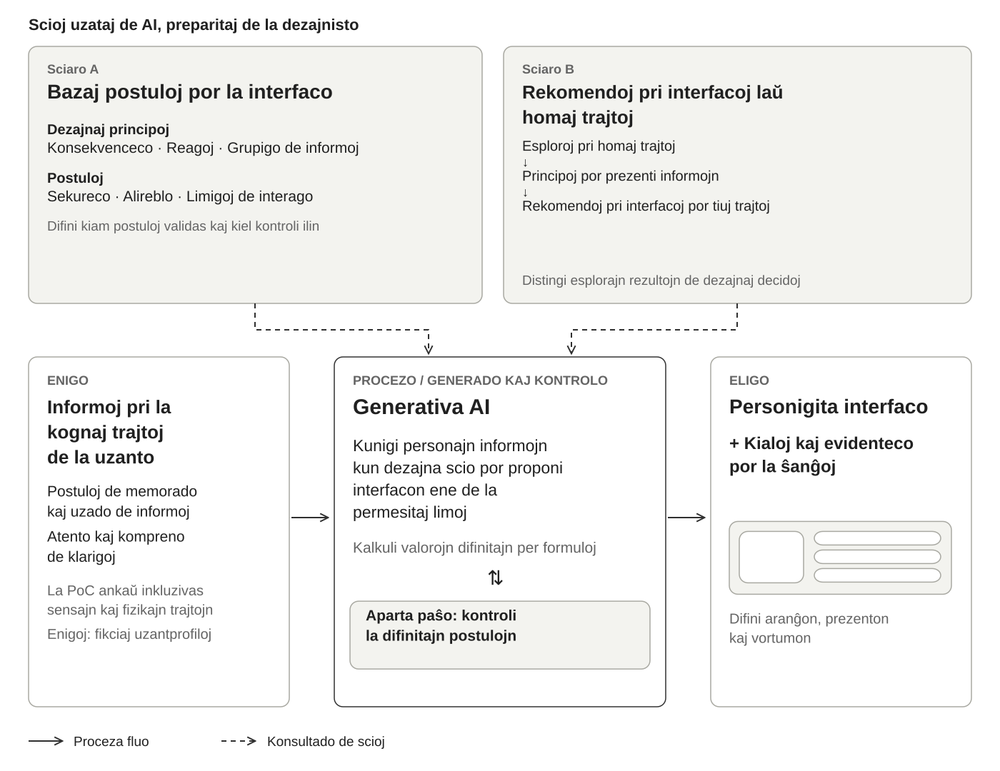
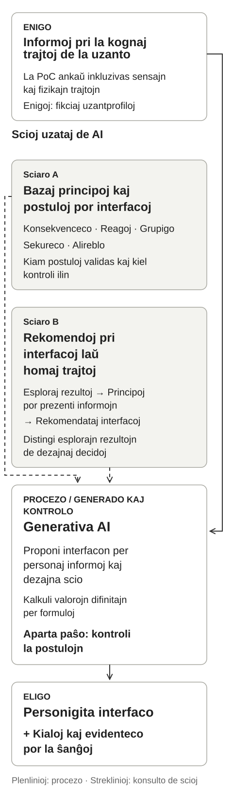
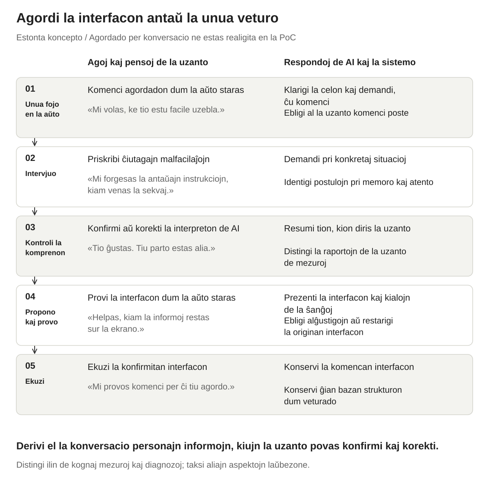
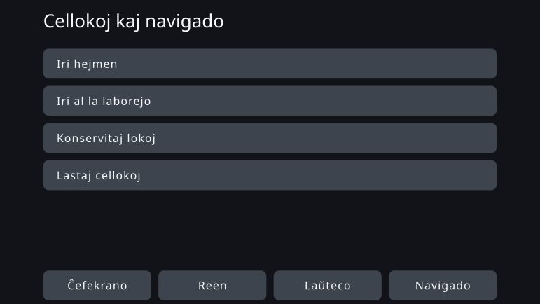
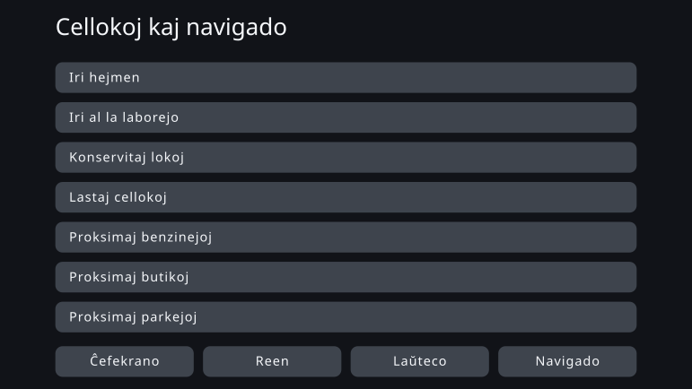
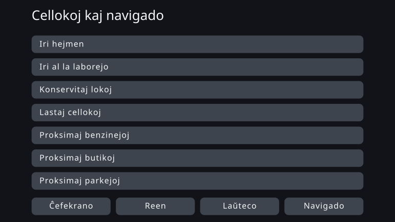

Personigi interfacojn per dezajno laŭ limigoj
aŭgusto 2026
Superrigardo
Ĉi tiu projekto proponas sistemon, kiu ricevas informojn pri kognaj trajtoj rilataj al uzado de interfaco kaj generas interfacon adaptitan al tiu homo. Ĝi kunigas principojn de interfaca dezajno, postulojn pri sekureco kaj alirebleco, kaj esplorojn pri homaj trajtoj.
Mi uzis aliron, kiun mi nomas dezajno laŭ limigoj: homoj difinas la postulojn kaj kiam ili aplikiĝas, kaj generativa AI ellaboras konkretajn proponojn ene de tiuj limoj. Uzante aŭtonavigadon kiel provokazon, mi konstruis konceptpruvan prototipon, kiu generas interfacojn por 13 fikciaj uzantprofiloj, inkluzivantaj ankaŭ sensajn kaj fizikajn trajtojn, kaj aparte kontrolas la eligojn kontraŭ la postuloj.
La komparo montris unu klaran ŝanĝon de la ekranaranĝo responde al fizika trajto, dum la plej multaj eligoj montris malmultan vidan ŝanĝon. Uzebleco kaj sekureco ne estis provitaj kun uzantoj. La laboro helpis identigi, kiuj decidoj povus resti ĉe generativa AI kaj kiuj postuloj limigis la eblojn personigi la interfacon.
Fono: kiom da malsamaj bezonoj povas kontentigi unu interfaco?
La plej multaj produktoj disponigas komunan interfacon, dezajnitan por kiel eble plej multaj homoj. Sed kiom da informo oni kaptas samtempe, kiel facile oni direktas la atenton, kiel kompreneblaj estas la vortoj kaj kiel precizaj la etaj manipuladoj — ĉio tio diferencas de homo al homo. Ke komuna interfaco konsideras multajn homojn, ne signifas, ke ĝi konvenas al tiu unu homo.
Ankaŭ la taksado je la nivelo de grupo havas siajn limojn. En la libervolaj gvidlinioj, kiujn la usona NHTSA publikigis en 2013, ekzemple, ĉiu akceptokriterio pri rigardado postulas, ke almenaŭ 21 el 24 partoprenantoj plenumu ĝin. Tio ne estas kondiĉo signifanta, ke ĉiuj povas uzi ĝin same. [1]
Eĉ ĉe produktoj, kie la litergrandeco aŭ la montrata kvanto ŝanĝeblas, la uzanto devas rimarki, ke la agordo ekzistas, ligi ĝin al sia propra malfacilaĵo kaj elekti la ĝustan alĝustigon. Ĉu tiuj agordoj restas nesufiĉe uzataj, kaj homoj plu uzas nekonvenan staton? De tiu demando ĉio komenciĝis.
En aŭtomobila navigilo, rigardi la ekranon kaj manipuli ĝin konkurencas kun la atento, kiun postulas la stirado. [1] Se malbona kongruo kun la interfaco povas pligrandigi tiun ŝarĝon, tiam prepari jam ĉe la komenco de la uzado staton konvenan al la homo indas esplori, kaj pro uzebleco kaj pro sekureco.
Generativa AI ebligis prototipi procezon, kiu transformas personajn informojn kaj dezajnan scion en interfacon. Mi esploris, ĉu tio povus redukti la laboron permane dezajni apartan interfacon por ĉiu homo.
Kiom ofte tiuj agordoj efektive estas uzataj, kaj kiel malbona kongruo kun la interfaco influas akcidentojn, ne estis kontrolitaj en ĉi tiu projekto.
Propono — ligi personajn informojn al du specoj de dezajna scio
La sistemo ricevas informojn pri kognaj trajtoj rilataj al uzado de interfaco. Ĉi tiu konceptpruva prototipo uzis fikciajn uzantprofilojn, kiuj inkluzivis ankaŭ sensajn kaj fizikajn trajtojn. La AI konsideras tiujn informojn kune kun du antaŭe pretigitaj sciaroj: bazaj reguloj de interfaca dezajno, kaj scio liganta homajn trajtojn al rekomendataj interfacaj solvoj.
Sur tiu bazo la AI konkretigas la interfacon ene de la permesata amplekso, kaj la konformeco al la kondiĉoj estas kontrolata. La eligo estas la interfaco konvena al tiu homo kune kun klarigo pri tio, kio estis ŝanĝita kaj kial.


Enigo: informoj pri la homo
Ekzemple: kiom facile oni memoras kaj traktas plurajn informojn samtempe, kiom facile aliaj stimuloj forlogas la atenton, kian klarigon oni plej facile sekvas. La efektivigo inkluzivis ankaŭ la vidon kaj la manan lertecon. La ekrano ne estas decidata el diagnoza nomo; traktataj estas personaj informoj rilataj al la uzado de la interfaco.
Sciaro A: bazaj postuloj pri interfacoj
Oni ordigas la bazajn dezajnajn principojn: konsekvenco, respondo al agoj, grupigo de informo, legebleco de teksto kaj videbleco de tuŝceloj. Aldone, la manipulaj limigoj de enveturilaj interfacoj kaj la kondiĉoj de alirebleco estas difinitaj kune kun la situacioj, en kiuj ili validas.
Sciaro B: ligi homajn trajtojn al rekomendataj interfacoj
Homaj trajtoj konstatitaj de esploroj estas ligataj al principoj de informprezentado kaj de tie al la dezajno de la interfaco. Al trajto kiel «teni informon dum oni manipulas estas ŝarĝe» respondas la direkto «malpliigi tion, kion oni devas memori», kio kondukas al solvoj, kiuj lasas la necesajn informojn sur la ekrano.
Tamen esploro pri trajto ne donas senpere dezajnan valoron por aŭtomobila navigilo. Tio, kion la esploroj konstatas, estas distingata de la dezajnaj decidoj, kiujn ĉi tiu projekto eltiris el ili. Plibonigoj same utilaj al ĉiuj apartenas al la bazaj reguloj kaj ne kalkuliĝas kiel rezulto de individuigo.
Proponata sperto: trovi taŭgan interfacon antaŭ la unua veturo
Estonta koncepto. La komenca agordado per konversacio ne estas efektivigita en ĉi tiu konceptpruva prototipo.
Oni aĉetas aŭton kaj unuafoje sidiĝas ĉe la stirilo. Dum la aŭto staras, AI-agento demandas pri viaj kutimaj spertoj pri uzado de interfacoj. Anstataŭ tralegi teknikajn agordoerojn, la homo rakontas, kio kutime malfaciligas kaj kio ŝajnas al li facile uzebla.

-
Antaŭ la unua veturo: komenci la konversacion
AI: «Por adapti la ekranon al vi, ĉu vi povus rakonti iom pri via kutima uzo de interfacoj? Ni povas fari tion poste, se vi preferas.»
La homo komprenas la celon kaj elektas, ĉu komenci nun aŭ poste.
-
Intervjuo: rakonti pri la malfacilaĵoj
AI: «Kiam navigaj instrukcioj sekvas unu la alian, kio fariĝas malfacile sekvebla?»
Uzanto: «Kiam venas la sekva instrukcio, mi foje forgesas, kion diris la antaŭa.»
La AI demandas pri konkretaj situacioj kaj ordigas la malfacilaĵojn ligitajn al la tenado de informo kaj al la direktado de la atento.
-
Konfirmo: la homo povas korekti tion, kion la AI komprenis
AI: «Ŝajnas, ke lasi la informojn sur la ekrano estus por vi pli facile ol memori la paŝojn. Ĉu mi ĝuste komprenis?»
La homo konfirmas aŭ korektas tiun komprenon. Kion li mem raportas en la konversacio, oni traktas aparte de mezuritaj kognaj valoroj kaj de diagnozoj; kie mezurado necesas, oni antaŭvidas apartan manieron konstati ĝin.
-
Propono kaj provo: aŭdi la kialon, provi la ekranon
AI: «Por malpliigi tion, kion vi devas memori, mi proponas ekranon, kiu montras kaj la nunan agon kaj la sekvan paŝon.»
Dum la aŭto staras, la homo provas ekzemple elekti cellokon. Li povas diri «antaŭe estis pli klare» aŭ «ĉi tie mi ŝanĝus la vortojn», kaj la propono estas alĝustigebla, aŭ la origina interfaco restarigebla.
-
Komenco de la uzado: uzi la konfirmitan interfacon
La interfaco konfirmita de la homo estas konservata kiel komenca stato. Dum la veturado restas la baza strukturo, kiun la homo jam lernis. Kiam li volas retrakti ĝin, li povas realĝustigi dum halto.
La celo de la konversacio ne estas klasifiki la uzanton unufoje por ĉiam. Ĝi estas pretigi la staton, de kiu li ekiras, per interŝanĝo, en kiu li povas klarigi sin kaj korekti la komprenitan.
Efektivigo — apartigi la nepre validajn kondiĉojn de la juĝoj lasitaj al la AI
Mi realigis la tutan procezon: ricevi informojn pri la trajtoj de homo, generi interfacojn, kontroli ilin, bildigi ilin kaj kompari ilin. Anstataŭ konversacia intervjuo, mi uzis 13 fikciajn uzantprofilojn kun malsamaj trajtoj kiel enigon.
Aŭtomobila navigilo estis elektita kiel temo, ĉar ĝi permesas trakti kondiĉojn konkrete: la areon de la ekrano, la grandecon de la tuŝceloj, la montreblan informkvanton kaj tion, kio manipuleblas dum veturado.
La aliro de dezajno laŭ limigoj
Dezajno laŭ limigoj, en la senco de ĉi tiu projekto, estas metodo, en kiu homo dezajnas la nepre validajn kondiĉojn kaj ilian aplikan amplekson, kaj la AI proponas konkretajn solvojn ene de tiu kadro.
Ĉe regul-bazita parametra ŝanĝo la responda valoro aŭ opcio por ĉiu enigo estas fiksita anticipe. Ĉi tiu koncepto, anstataŭ plenigi ĉiujn respondojn, fiksas la permesatan amplekson kaj la bazon de la juĝo, kaj lasas la ankoraŭ nefiksitajn valorojn kaj vortumojn al la bontrovo de la generativa AI. La efektivigo kombinas la partojn decidatajn per kalkulo kun tiuj decidataj de la generativa AI.
| Kion la evidenteco establas | Traktado en la efektivigo |
|---|---|
| Specifa valoro aŭ matematika rilato estas establita | Kalkuli la valoron ene de la kontrolitaj kondiĉoj kaj aplika amplekso |
| La direkto de la alĝustigo estas konata, sed ne ĝia grado | Elekti valoron kongruan kun tiu direkto kaj la limigoj, kaj registri ĝin kiel ankoraŭ ne provitan dezajnan decidon |
| La evidenteco ne difinas taŭgan elekton | Trakti la rezulton kiel esploran proponon bezonantan taksadon |
Ĉiufoje, kiam esplora konstato estis transportita en la interfacon, la fonto, la aplikaj kondiĉoj kaj la dezajna decido estis registritaj. Ĉar la kialoj estas eligataj kune kun la interfaco, eblas retrovi, kial por tiu homo aperis ĝuste tiu ekrano.
Kontroli la generitan interfacon en aparta paŝo
La interfaco estas generata kiel strukturitaj datenoj priskribantaj ekranajn elementojn kaj ilian aranĝon, kaj poste bildigata el tiuj datenoj. Kodo kontrolas nombrajn kaj strukturajn postulojn. Aparta kontrolo per granda lingvomodelo (LLM) taksas kelkajn postulojn, kiuj bezonas interpreton de signifo. La sistemo ankaŭ registras erojn ekster la amplekso de aŭtomataj kontroloj kaj erojn, kiujn ne eblas kontroli pro mankantaj informoj.
Kion la kontrolo konfirmas, estas la konformeco al la kondiĉoj tiaj, kiaj ili estas difinitaj. Ĉu la interfaco vere estas pli facile uzebla aŭ pli sekura, postulas taksadon fare de uzantoj.
Se en la dezajna fazo aperas kontraŭdiro inter kondiĉoj, la AI montras la lokon, kaj homo decidas, kiel revizii ilin. Tio ne estas mekanismo, en kiu la AI ĉe ĉiu generado ŝanĝas la kondiĉojn laŭ sia oportuno.
Komparo de interfacoj: klara ŝanĝo kaj preskaŭ senŝanĝa aranĝo
La komparbazo estas la interfaco farita el komunaj defaŭltaj valoroj, sen enigo de personaj trajtoj. Ĉe la sama funkciaro, al ĝi estis komparata la eligo, kiam personaj trajtoj estis enigitaj.
La subaj bildoj estas eligoj de la prototipo, ne komerca navigilo antaŭ kaj post refarado. Ankaŭ la uzantprofiloj ne reproduktas realajn uzantojn; ili estas fikciaj enigoj por konstati la efikon de trajto.
Kazo, en kiu la tuŝceloj pligrandiĝis
PS-12: uzantprofilo kun malfacilo fari precizajn tuŝenigojn
La aĝo kaj la kognaj kaj sensaj trajtoj kongruas kun la bazo PS-01; ŝanĝita estas nur la mana lerteco. En la montrataj bildoj ĉiu tuŝcelo pligrandiĝis, kaj la eroj vicigitaj meze de la ekrano falas de sep al kvar. La fiksaj butonoj ĉe la malsupro ne estas kalkulitaj en tiu nombro.
Komuna defaŭlta interfaco

Interfaco generita el personaj trajtoj


Pligrandigi la tuŝcelojn havas sian prezon: sur la sama ekrano oni povas elekti malpli da eroj samtempe. La funkciaro laŭ la dezajno konserviĝas, sed el ĉi tiu sola ekrano ne eblas taksi, kiom facile oni atingas la sekvajn ekranojn.
Kazo, en kiu la strukturo preskaŭ ne ŝanĝiĝis
PS-01: la baza uzantprofilo
En la litergrandeco estas malgrandaj diferencoj, sed la nombro de la eroj, la aranĝo kaj la grandeco de la tuŝareoj estas preskaŭ samaj. Kun ĉi tiu kombino de reguloj kaj enigoj ne aperis rezulto, kiu grande ŝanĝus la strukturon kompare kun la komuna defaŭlta interfaco.
Komuna defaŭlta interfaco


Interfaco generita el personaj trajtoj


Rezultoj kaj diskuto — kie restis la libereco generi
La aldona valoro de generativa AI restas nepruvita
En mia propra vida komparo, PS-12 estis tiu, kiun mi povis rekoni kiel klaran ŝanĝon de la ekranstrukturo. Aliaj eligoj diferencis en vortoj kaj agordoj, sed el la aspekto de la ekrano grandan diferencon de valoro ne eblis rekoni.
Ankaŭ la ŝanĝo ĉe PS-12 estis ene de tio, kion atingas agordoj de montrogrando kaj montrata kvanto. En la sperto, ke la komenca stato jam konvenas sen ke oni mem serĉu la agordojn, kuŝas ebleco. Sed la valoro de tiu sperto kaj la neceso de generativa AI por produkti la interfacon devas esti kontrolataj aparte.
Ĉi tiu konceptpruva prototipo ne montris, ke adapti interfacon al kognaj trajtoj plibonigis la plenumadon de taskoj, nek ke generativa AI produktis pli bonan interfacon ol aliro bazita sur reguloj.
La dezajna spaco konstruita ĉi-foje estis mallarĝa
Kiam la necesaj grandecoj por teksto kaj tuŝceloj estas garantiitaj kaj la kondiĉoj pri ekranareo kaj montrata kvanto aplikitaj, la elekteblaj strukturoj malmultiĝas. En la efektivigo multo krome estis fiksita per kalkulo aŭ per fiksaj strukturoj, tiel ke al la AI restis malmulte da spaco elekti inter pluraj taŭgaj proponoj.
En la vortumado restis libereco, sed tiuj diferencoj estas malpli videblaj ol ŝanĝo de la strukturo, kaj la ĉi-foja vida taksado ne kaptis ilian valoron. Por konstati la valoron de generativa AI necesas, mi konkludis, ke la elekteblaj proponoj havu amplekson kaj ke iliaj diferencoj signifu ion por la sperto de la uzanto.
Ĉi tiu rezulto koncernas la regulojn kolektitajn ĉi-foje, la adoptitajn interfacajn parametrojn kaj la gamon de dezajnoj subtenataj de ĉi tiu realigo. Ĝi ne establas ĝeneralan limon de aŭtomobila navigado aŭ de personigitaj interfacoj.
Krome mi ne kontrolis rekte la plenan tekston de ĉiuj koncernaj normoj de JIS, ISO kaj aliaj. La dezajna scio estis kunmetita el la havebla materialo: artikoloj, oficialaj gvidiloj, publikaj datenoj, kaj la teksto aŭ antaŭrigardo de kelkaj normoj. La amplekso de tio, kion mi konsultis, eble influis, kiuj dezajnaj elektebloj disponeblis. Ĉu atenta legado de la normtekstoj plilarĝigus tiun liberecon aŭ male mallarĝigus ĝin per pluaj kondiĉoj, restas konstatenda.
La laboro kun la AI plibonigis la regulojn mem
Alia rezulto estis la procezo difini postulojn por generado kaj fari ilin kontroleblaj.
| Trovita problemo | Respondo en la dezajno |
|---|---|
| La sama elemento havis plurajn malsuprajn limojn, kaj ilia kombino restis malklara | La aplikaj rilatoj estis klarigitaj, por ke neniu limo estu subpasita |
| Kondiĉo aplikenda nur dum veturado aplikiĝis ankaŭ dum halto | La veturstato, en kiu ĉiu kondiĉo validas, estis eksplicite indikita |
| La komplikeco de vortumado kaj la ĉeesto de piktogramoj estis kunigitaj en unu dezajnan dimension | Ili estis apartigitaj en memstarajn dezajnajn aksojn, redonante elekteblojn senbezone malaperintajn |
| La AI uzis kiel bazon ankaŭ kondiĉojn, kiuj ne validas por tiu eligo | Por ĉiu eligo estis eksplicite indikite, kiujn kondiĉojn konsulti |
| Juĝoj, kiuj devis resti ĉe la AI, estis fiksitaj flanke de la efektivigo | La divido de roloj inter specifo kaj efektivigo estis reviziita |
La AI identigis problemojn, mi taksis ilin, kaj la decidoj estis reflektitaj en la dezajno. Tiu ripeta procezo klarigis, kiuj postuloj devas validi por ĉiuj kaj kie interfaco povas esti personigita.
Sekvaj paŝoj: taksi personigon kaj la rolon de generativa AI
Sekve mi volas kontroli du demandojn aparte.
Unue: kiom valoras sperto, en kiu la komenca interfaco jam konvenas sen ke oni mem agordu ĝin. Tio postulas efektivigi la konversacian demandadon, la korektadon de la komprenita kaj la provon, kaj poste konstati la fidindecon de la enigitaj informoj kaj la ŝarĝon por la uzanto.
Due: en kiuj dezajnaj kuntekstoj povus la diferencoj inter AI-generitaj proponoj plibonigi la sperton? Mi volas esplori kuntekstojn, kie la postuloj ankoraŭ lasas plurajn validajn eblojn por organizi informojn kaj sinsekvojn de interagoj.
En taksado kun realaj uzantoj oni komparus, ĉe la sama tasko, la komunan defaŭltan interfacon, interfacon alĝustigitan regul-baze el personaj informoj, kaj interfacon konkretigitan de generativa AI. La tempo bezonata por plenumi la taskon, eraroj, rigardoj kaj subjektive perceptata laborŝarĝo permesus apartigi la efikon de la adapto al la homo disde la efiko de la uzo de generativa AI.
Ankaŭ la kontrolado de la koncernaj normoj daŭros, por ĝisdatigi la limon inter tio, kion la esploroj konstatas, kaj tio, kio estas dezajna decido. Krom la kontrolebleco de la kondiĉoj, la sekva tasko estas lasi ene de ili elekteblojn, kiuj signifas ion por la uzanto.
Referencoj
- NHTSA, Visual-Manual NHTSA Driver Distraction Guidelines for In-Vehicle Electronic Devices (publikigita en 2013). Libervolaj gvidlinioj. Pri la akceptokriterioj laŭ rigardado vidu VI.E; pri la klarigo pri deturniĝo de la atento kaj risko vidu I.C kaj aliajn lokojn de la ĉefteksto. Tio ne signifas, ke ĉi tiu konceptpruva prototipo estas atestita kiel konforma al tiu testo. La dokumento en Federal Register